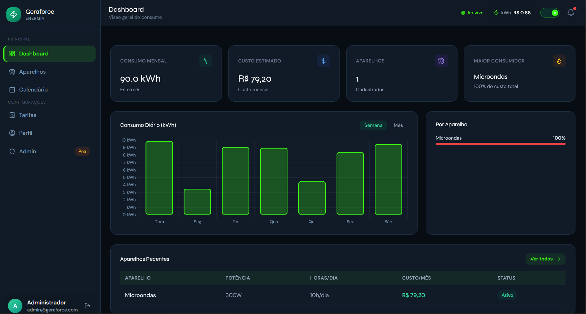

Banner Digital Interativo • GitHub Pages
Geraforce
Sistema web para monitoramento e controle do consumo de energia elétrica.
Preview da Solução

Dashboard do sistema Geraforce.
Contexto
Problema identificado
O aumento constante das tarifas e a falta de controle detalhado geram elevados desperdícios de energia em residências e pequenos negócios com o consumo inadequado de equipamentos elétricos.
(ANEEL, 2024)
Exemplo de dor
A ausência de ferramentas para monitoramento do consumo de energia dificulta a identificação de desperdícios e reduz a capacidade de planejamento financeiro dos usuários.
Proposta
Solução desenvolvida
💡
Proposta de Valor
Transformar a gestão de energia de lojistas em economia real.
⚙️
Funcionalidade Principal
Cadastro simplificado de aparelhos (potência/tempo de uso) e calcula o gasto com base nas tarifas regionais, gerando gráficos instantâneos, rankings de consumo e barras de progresso de metas.
📱
Experiência do Usuário
Interface limpa, intuitiva e sem curva de aprendizado. Conta com dicas visuais que facilitam o preenchimento de dados técnicos.
Implementação
Tecnologias utilizadas
HTML
CSS
JavaScript
MySql
Visual Studio Code
Trello
GitHub Pages
Figma
Word
Arquitetura
Como a solução funciona
O Geraforce é uma aplicação web estruturada em camadas que integra front-end, back-end e banco de dados para processar informações de consumo energético em tempo real. O fluxo de dados opera de forma dinâmica: o usuário insere as informações técnicas de seus aparelhos na interface, o servidor processa os cálculos e armazena os dados de forma segura, atualizando os painéis visuais do usuário instantaneamente.
Usuário
→
Interface Web
→
API / Backend
→
Banco de Dados
Demonstração
Apresentação do MVP
Use esta seção para colocar vídeo, GIF, screenshots, link do Figma ou acesso ao sistema funcional.
Área de Demonstração
Substitua por um vídeo incorporado do YouTube, uma imagem do protótipo ou um GIF do sistema em funcionamento.
Ver Protótipo
Impacto
Resultados esperados e ODS
Desenvolver um sistema web para monitoramento e controle do consumo de energia, auxiliando usuários na redução de desperdícios e no gerenciamento eficiente de gastos energéticos. O projeto está alinhado ao ODS 7 – Energia Acessível e Limpa, incentivando o uso consciente e contribuindo com práticas sustentáveis no consumo energético.
ODS 7
Energia Acessível e Limpa
Equipe
Integrantes do projeto
Apresente os membros da equipe e suas responsabilidades.
J
Josué Carvalho
Front-End, Testes, Product Owner
L
Luis Filipe
Documentador e Back-End
C
Caio Sbardelotto
Documentador e Back-End
C
Gabriel Henrique
Front-End e Testes
C
João Pedro
Fullstack
Acesse o projeto durante a apresentação
Use o QR Code para abrir esta landing page no celular, acessar o repositório ou testar o protótipo.